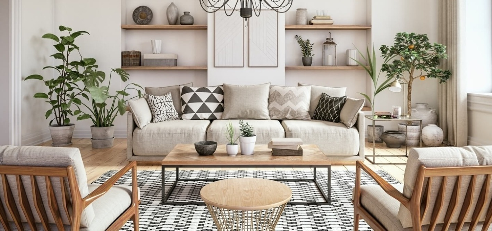

When buying a new outfit you can get away with opting for something 'in vogue' that will be out of fashion next season (at least in terms of cost) but when it comes to investing in new furniture you're going to want to choose items with staying power. Luckily there are a whole raft of iconic furniture pieces, some of which have been around for nearly 100 years, that will never go out of style. Want to make sure that your next home decor project stands the test of time? Starting to build a collection of furniture pieces that will never go out of style? Well then take the time to browse this list of iconic furniture and lighting designs for the modern home. Click on the Sofa, the table, or the armchair to go to a new page and read more about the topic:
